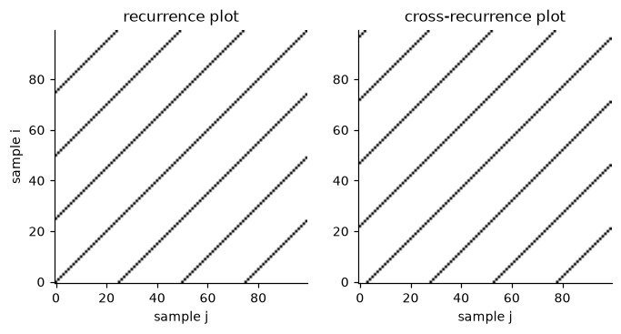

Synchronization#
Two dancers who move in unison, a quartet that breathes together, two hands that keep the same rhythm: synchronization is the degree to which the movements of several participants, or of several parts of the same body, are coordinated in time. There is no single measure of it, because coordination can mean different things: the signals rise and fall together, their phases stay locked, their discrete events occur at the same moments, their trajectories visit the same states. The twelve features of this family are organised here by what is compared.
What is compared |
Quantity |
Features |
|---|---|---|
Two signals |
nonlinear interdependence |
|
The phases of two signals |
phase locking value |
|
Two or more series of events |
event synchronization |
|
Several spike trains |
SPIKE-synchronization |
|
The states visited by one or two movements |
recurrence |
|
A series of event identifiers against a pattern |
sequence detection |
|
The members of a group |
correlation, partial correlation, staged progression |
|
Notation is that of Notation, units and conventions: samples are indexed by \(n\), a window has \(N\) samples and slides by a hop \(H\). With one
exception that is stated below, the measures work on such a window, return WARMING_UP until it is full and NO_OUTPUT between
two hops (see Results, statuses and recorders), and count time in samples (tau, lags and event intervals), not in seconds. A pair
of signals is passed to process one sample of each per call, and to run as two series of the same length. Inputs to
the measures are one signal per participant: for 2D or 3D data, reduce each participant to a scalar first, for example the
speed from Kinematics.
Synchronization measures assume that the coordination is stationary over the window. Choose the window so that it contains several cycles of the movement and so that the coordination does not change within it.
Two signals#
Linear correlation (see the group matrix below) sees only relations of the form \(y\approx ax+b\). The nonlinear
interdependence of Arnhold and colleagues [citation needed] (nonlinear interdependence, Arnhold et al.) detects any
dependence in which the state of one signal determines the state of the other. Each signal is embedded in a state space of
dimension \(m\) (embedding_dimension): the state at sample \(n\) is a vector of \(m\) delayed samples. For each state of the
first signal \(X\), the \(k\) nearest states in time (neighbours) are found, and the interdependence \(S(X|Y)\) compares the
distances of these states in the space of \(X\) with the distances of the states that have the same time indices in the space of
\(Y\). It is close to 1 for two signals that determine each other (identical signals give 1) and close to 0 for independent
signals. The two directions \(S(X|Y)\) and \(S(Y|X)\) are generally different, and their asymmetry is read as the direction of the
coupling.
NonlinearInterdependence returns both values, first_to_second_interdependence and
second_to_first_interdependence, and threshold, the value \((k/m)^{2/m}\) that the block computes from its parameters. A
correction of the core is that this threshold used an exclusive-or instead of the power. The result is INVALID_INPUT when a
value is not finite.
>>> from pyeyesweb.analysis_primitives import NonlinearInterdependence
>>> rng = np.random.default_rng(5)
>>> x = rng.normal(size=100)
>>> dependent = NonlinearInterdependence(window=100, neighbours=3).run(x, x ** 3) # a nonlinear function of x
>>> independent = NonlinearInterdependence(window=100, neighbours=3).run(x, rng.normal(size=100))
>>> round(float(dependent.first_to_second_interdependence[-1]), 2), round(float(independent.first_to_second_interdependence[-1]), 2)
(0.93, 0.01)
Phase#
For oscillatory movement, such as the swing of two arms or the steps of two walkers, synchronization is often a matter of phase: the signals may have different amplitudes and a constant lag and still be perfectly coordinated. The phase locking value (PLV) measures this [8, 22]. Each window of each signal is optionally band-pass filtered, the instantaneous phase \(\phi(n)\) is taken from the analytic signal obtained with the Hilbert transform,
and the PLV is the length of the mean phasor of the phase difference over the \(N\) samples of the window,
It is 1 when the phase difference is constant over the window (perfect locking, whatever the offset), and close to 0 when it is
spread uniformly (no phase relation). PhaseLockingValue implements it and
returns phase_locking_value for the last complete window.
The Hilbert phase is only meaningful for narrow-band signals: on broadband movement data the PLV stays near 1 whatever the
coupling. Nothing is filtered unless low_frequency and high_frequency (with the sampling_rate) are given, so either
band-limit the signals first or pass the band. A constant signal has no phase evolution, and the block reports 1 for two
constant windows.
>>> from pyeyesweb.analysis_primitives import PhaseLockingValue
>>> time = np.arange(200) / 100.0
>>> reference = np.sin(2 * np.pi * 3.0 * time)
>>> locked = np.sin(2 * np.pi * 3.0 * time + 0.5) # same rhythm, shifted by 0.5 rad
>>> drifting = np.sin(2 * np.pi * 4.3 * time) # a different rhythm
>>> plv = PhaseLockingValue(window=200, low_frequency=1.0, high_frequency=10.0, sampling_rate=100.0)
>>> round(float(plv.run(reference, locked).phase_locking_value[-1]), 2)
0.98
>>> plv.reset()
>>> round(float(plv.run(reference, drifting).phase_locking_value[-1]), 2)
0.15
Event series#
Many movement data are discrete events rather than signals: the onsets of gestures, the beats of a performer, the peaks found
by ScalarPeakDetector. Event synchronization measures the coordination of two such
series without assuming a fixed rhythm [citation needed] (event synchronization, Quian Quiroga et al.). In the input a
non-zero sample is an event. With \(m_x\) and \(m_y\) events in the first and in the second series, and \(c(y|x)\) the number of events
of the second series that follow an event of the first within tau samples (and \(c(x|y)\) the converse), the feature
EventSynchronization reports
\(Q=1\) means that every event of each series has a partner in the other. \(q>0\) means that the first series leads, \(q<0\) that the
second does; simultaneous events count for \(Q\) but not for \(q\). With weighted=True a pair at a lag of \(d\) samples counts with
the weight \(1-(d-1)/\tau\) instead of 1. The outputs are synchronization (\(Q\)) and delay (\(q\)).
The feature works on consecutive windows that do not overlap: hop equals window (its default) and any other value raises
ValueError. It gives one result per window (OK once per window) and no NO_OUTPUT, the exception to the sliding windows of
the family. By default the counts accumulate across windows, so the value of a window describes the whole recording up to its
end; for the value of each window on its own, pass reset_every_buffer=True.
\(Q\) depends strongly on tau: the same two series give a low \(Q\) with a small tau and a \(Q\) close to 1 with a large one, so
choose tau from the lags that count as simultaneous in your data.
Corrected in the core: the result follows the definition above, with the coincidence window \(0< ext{lag}\le au\), the weight and the sign of the delay given here, and each event credited exactly once.
EventSynchronizationMECS (multi-event-class synchronization) extends the measure
to number_of_inputs series that carry events of several classes (for example one channel per type of gesture) [citation needed]
(multi-event-class event synchronization, MECS). For every class and every pair of series, the coincidences \(S_{ij}\) are
the pairs of events within tau samples, weighted by the kernel; with \(m_i\) and \(m_j\) the event counts of the two series the
pair term is \(\min\!\big(1,S_{ij}/\sqrt{m_im_j}\big)\), and the synchronization of the class is the mean of the pair terms over
the \(M(M-1)/2\) pairs of the \(M\) series. It returns the synchronization of each class and the number of events of each class
in the window, summed over the series, and also needs non-overlapping windows. It has no reset_every_buffer: its values and counts are those of
each window on its own (checked on random trains), and it depends on tau in the same way. Only the former “version 2” of the algorithm is
provided.
>>> from pyeyesweb.analysis_primitives import EventSynchronization
>>> first, second = np.zeros(60), np.zeros(60)
>>> first[[5, 25, 45]] = 1 # three events of the first performer
>>> second[[7, 27, 56]] = 1 # the second follows two of them within 3 samples
>>> record = EventSynchronization(window=60, tau=3).run(first, second)
>>> round(float(record.synchronization[-1]), 2), round(float(record.delay[-1]), 2)
(0.67, 0.67)
Spike trains#
A spike train is an event series for which a good coincidence window is not known in advance, as in the firing of neurons or
in irregular gestures. SPIKE-synchronization [citation needed] (SPIKE-synchronization, Kreuz et al.) has no time-scale
parameter: coincidence is decided adaptively from the local spike intervals. Each spike receives a coincidence
indicator, 1 if it coincides with a spike of another train and 0 if it does not; the degree of synchronization is the mean of
the indicator over all the spikes of all the trains (a spike shared by two trains counts twice), and the distance is
\(1-\text{degree}\). SpikeSynchronization takes number_of_inputs trains in one of two
modes. In "binary" mode each call gives one sample with a channel per train (non-zero is a spike), and the feature also
returns the profile, the coincidence indicator of the merged spikes at each sample (-1 where no train has a spike). In
"timings" mode each call takes a matrix whose rows are the spike times of the trains (positive and increasing, in any unit)
and nothing is carried from one call to the next; it is OK for every call. The core fixed in this feature the swap of the
degree and the distance in binary mode and the use of distinct spike positions instead of all spikes in the mean.
>>> from pyeyesweb.analysis_primitives import SpikeSynchronization
>>> trains = np.zeros((50, 2))
>>> trains[[5, 20, 35], 0] = 1
>>> trains[[5, 21, 40], 1] = 1
>>> record = SpikeSynchronization(window=50).run(trains)
>>> float(record.degree[-1]), float(record.distance[-1])
(1.0, 0.0)
Recurrence#
Recurrence analysis compares a movement with itself or with another movement in the space of states [citation needed] (recurrence plots, Eckmann et al.; cross-recurrence, Marwan et al.). For a window of states \(\mathbf{x}_n\) (one value per channel, for example the posture of a participant), the recurrence plot is the binary matrix
with \(\Theta\) the Heaviside step (a distance equal to \(\epsilon\) is not a recurrence), \(p\) the order and \(\epsilon_i\) the
threshold of row \(i\) (epsilon, or one per row with use_multiple_epsilons). The diagonal is 1. A periodic movement draws
diagonal lines, whose spacing is the period; a movement that stays in one posture draws blocks.
RecurrencePlot returns the matrix of the last complete window as
recurrence_matrix, of shape \((N,N)\).
The cross-recurrence plot compares two multichannel signals with the same channels, for example two participants performing
the same gesture: \(R_{ij}=\Theta(\epsilon_i-\lVert\mathbf{x}_i-\mathbf{y}_j\rVert_p)\), with \(\mathbf{x}\) from the first signal
and \(\mathbf{y}\) from the second. Long diagonal lines mean that the two follow the same trajectory, possibly with a time shift, and
the offset of the line from the main diagonal is that shift. CrossRecurrencePlot
returns cross_recurrence_matrix. In both, the core corrected the order, which used to be ignored (the distance was always
Euclidean).
import matplotlib.pyplot as plt
import numpy as np
from pyeyesweb.analysis_primitives import CrossRecurrencePlot, RecurrencePlot
n = np.arange(100)
phase = 2 * np.pi * n / 25
leader = np.column_stack([np.sin(phase), np.cos(phase)]) # a circular movement, 2 channels
follower = np.column_stack([np.sin(phase - 0.8), np.cos(phase - 0.8)]) # the same, 0.8 rad (about 3 samples) later
self_plot = RecurrencePlot(window=100, epsilon=0.2).run(leader).recurrence_matrix[-1]
cross_plot = CrossRecurrencePlot(window=100, epsilon=0.2).run(leader, follower).cross_recurrence_matrix[-1]
fig, (left, right) = plt.subplots(1, 2, figsize=(6.4, 3.2))
left.imshow(self_plot, origin="lower", cmap="Greys")
left.set_title("recurrence plot")
right.imshow(cross_plot, origin="lower", cmap="Greys")
right.set_title("cross-recurrence plot")
for axis in (left, right):
axis.set_xlabel("sample j")
left.set_ylabel("sample i")
fig.tight_layout()

The first plot shows diagonal lines spaced by the period of 25 samples; in the second the diagonals are displaced from the main one by the delay between the two movements (0.8 rad of a cycle of 25 samples, about 3 samples).
The recurrence plot is a picture. GeneralisedAutoCorrelation reduces the
recurrence of a window of \(N\) multichannel states to a number as a function of the lag \(\tau\) in samples: the recurrence rate
the fraction of states that return within \(\epsilon\) after \(\tau\) samples. A periodic movement has peaks of \(\mathrm{RR}\) at
the multiples of its period. With output_type="function_of_tau" the feature returns the rates for tau_spread consecutive
lags from tau_min (and the lags in taus); with output_type="scalar" it returns the rate at the single lag tau.
>>> from pyeyesweb.analysis_primitives import GeneralisedAutoCorrelation
>>> states = np.sin(2 * np.pi * np.arange(200) / 50)[:, None] # a movement with a period of 50 samples
>>> for lag in (25, 50):
... rate = GeneralisedAutoCorrelation(window=200, output_type="scalar", tau=lag, epsilon=0.1).run(states).recurrence_rate[-1]
... print(lag, round(float(rate[0]), 2))
25 0.04
50 1.0
Sequences#
SequenceDetector recognises when a short ordered pattern is performed, for example the
successive gestures of an exercise, each coded with an integer identifier. At each sample the input is the identifier of the
event that happens (0 when none); the sequence is completed when its identifiers occur in order with at most inter_event_time
samples between two consecutive ones, and a longer gap breaks it. It returns is_completed, true on the sample that completes
the sequence, and sequence_count, the number completed so far. It is always OK. The core corrected the detection of the
reversed order (a lone first element used to be detected) and the double count of a palindromic sequence.
>>> from pyeyesweb.analysis_primitives import SequenceDetector
>>> detector = SequenceDetector(sequence="1 2 3")
>>> [int(detector.process(event).sequence_count) for event in [1, 2, 3, 0, 1, 2, 3]]
[0, 0, 1, 1, 1, 1, 2]
Group synchronization#
For a group of \(M\) participants the question is how the members are coordinated pair by pair, and how the coordination builds up. Three features work in chain.
Correlation. CorrelationsMatrix computes, over a window of number_of_inputs
signals (one per participant or per body segment), the matrix
with \(\rho\) the Pearson correlation over the window. Anti-correlation is reported as 0, so every entry lies in \([0,1]\). A signal that is constant over the window has no defined correlation: its row and column are 0 off the diagonal.
Direct synchronization. Two participants can correlate only because both follow a third one. With \(P=C^{-1}\),
PartialRecurrenceSynchronization removes the part of each correlation that the other
signals explain and returns the absolute partial correlation
an entry being 0 when a diagonal entry of \(P\) is not positive, and the whole matrix 0 when \(C\) is singular (constant or
perfectly collinear signals). It takes the matrix as input, so it is applied to the output of CorrelationsMatrix; it has no
window of its own.
Progression. When the members synchronize one after the other, TemporalSynchronization
follows how far the group has got. It takes number_of_inputs synchronization values per call (for example the entries of the
matrix above, or one phase locking value per participant) and compares each with its threshold: state is the number of
leading inputs, in order, that are at or above their threshold, and progression rises from 0 to 1 as the stages are completed
(with the weights stage_weights), reaching 1 when all inputs are above their thresholds. step counts the calls, and
efficiency_step (valid only when the progression is 1) says how quickly the group completed the process: 1 when it takes
number_of_inputs + 1 steps. It works one sample per call, so there is no window.
In the example the signal \(b\) follows \(a\) and \(c\) follows \(b\) with noise. All three are correlated, but \(a\) and \(c\) only through \(b\), which the partial correlation shows.
>>> from pyeyesweb.analysis_primitives import CorrelationsMatrix, PartialRecurrenceSynchronization, TemporalSynchronization
>>> rng = np.random.default_rng(5)
>>> a = rng.normal(size=300)
>>> b = a + 0.7 * rng.normal(size=300)
>>> c = b + 0.7 * rng.normal(size=300)
>>> correlations = CorrelationsMatrix(window=300, number_of_inputs=3).run(np.column_stack([a, b, c])).correlations_matrix[-1]
>>> correlations.round(2)
array([[1. , 0.81, 0.68],
[0.81, 1. , 0.85],
[0.68, 0.85, 1. ]])
>>> PartialRecurrenceSynchronization().process(correlations).synchronization_matrix.round(2)
array([[1. , 0.61, 0.04],
[0.61, 1. , 0.7 ],
[0.04, 0.7 , 1. ]])
>>> progress = TemporalSynchronization(thresholds=[0.5, 0.5, 0.5])
>>> [(round(float(r.progression), 2), int(r.state)) for r in map(progress.process, [(.6, .1, .1), (.6, .6, .1), (.6, .6, .6)])]
[(0.4, 1), (0.73, 2), (1.0, 3)]
Choosing a measure#
Continuous signals, oscillatory and narrow-band: the phase locking value. Continuous signals with an arbitrary coupling: the nonlinear interdependence, or the correlation matrix for a group.
Discrete events with a known tolerance in samples: event synchronization (two series) or MECS (several classes). Events without a natural tolerance: SPIKE-synchronization.
Whole-body or multichannel states, to see where and when two movements revisit the same posture: cross-recurrence.
A fixed order of gestures: the sequence detector.
Practical notes#
Reduce every participant to a scalar signal (or one vector per sample for the recurrence measures) and give all participants the same sampling rate, preferably from one clock. Resample before the measure if the streams differ.
The window should hold several cycles of the movement.
windowandtauare in samples: \(N=\lceil T f_s\rceil\) for a window of \(T\) seconds.A
NaNor infinite value givesINVALID_INPUTand no output; the Notes of each feature in the API reference give the exact rule.All values are dimensionless. The synchronization of surrogate signals (shuffled, or shifted by more than a cycle) gives a baseline for a significance threshold that no measure provides on its own.
Further reading#
The phase locking value and its use for the analysis of group behaviour are described in [8] and [22]; the generated pages of the API reference list every parameter of the features.